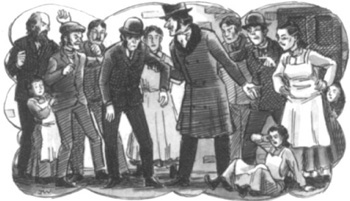

1
Listen to Part 1:

Cánh cửa
Ông Utterson là một luật sư. Năm 1885, ông năm mươi lăm tuổi. Ông cao, gầy. Khuôn mặt ông xanh xao, tóc màu bạc. Ông luôn mặc sơ mi trắng, comple đen, bộ quần áo đặc trưng của một luật sư. Ông sống một mình trong một căn nhà lớn gần trung tâm Luân Đôn.
Ông Utterson nghiêm túc, ít khi cười. Nhưng ông tốt bụng, thông minh và có nhiều bạn tốt. Hầu hết bạn ông là bác sĩ hoặc luật sư. Họ thích Utterson vì ông là người lắng nghe cẩn thận và ít nói. Utterson luôn giúp đỡ bạn bè.
Cứ đến chủ nhật, Utterson lại gặp người bạn của mình là ông Enfield. Hai người thích cùng nhau đi dạo ở Luân Đôn. Enfield chỉ cho Utterson nhiều nơi mới lạ và thú vị.
Một chiều chủ nhật, Enfield đưa Utterson đến khu East End của Luân Đôn. Đây là khu nghèo nàn của thành phố, nhưng lại có nhiều chợ và cửa hàng thú vị. Người dân từ nhiều quốc gia khác nhau sống ở đây. Vào các ngày trong tuần, nơi đây rất náo nhiệt. Tuy nhiên, vào những ngày chủ nhật, các chợ và cửa hàng đóng cửa khiến đường phố trở nên vắng vẻ.
Enfield dẫn Utterson đi xuống một con phố hẹp. Các ngôi nhà ở đây cũ kỹ, bẩn thỉu. Một số ngôi nhà bỏ trống còn một số thì cửa sổ vỡ loang lổ. Utterson không thích con phố này.
Ông hỏi, "Tại sao ông lại muốn đến đây?"
Enfield dừng lại. Ông chỉ vào một cánh cửa cũ kỹ nằm ở phía bên kia đường.
Enfield dừng lại. Ông chỉ vào một cánh cửa cũ kỹ nằm ở phía bên kia đường.
Listen to Part 2:
"Nhìn cánh cửa đó kìa," Enfield nói.
Utterson nhìn cánh cửa. Nó đen kịt và bẩn thỉu. Đó là cánh cửa của một ngôi nhà cũ. Trên cánh cửa là một chiếc cửa sổ. Ngôi nhà nằm cạnh một khoảng sân tối tăm.
Enfield kể, "Tôi muốn kể cho ông một câu chuyện kỳ lạ. Câu chuyện của tôi liên quan đến cánh cửa đó.
Utterson nhìn cánh cửa trong khi Enfield kể chuyện.
"Vài ngày trước," Enfield nói, "Tôi ngủ qua đêm tại nhà bạn của tôi cách đây không xa. Sáng hôm sau, tôi bắt đầu đi bộ về nhà. Nhưng tôi không biết đường đến khu vực này của Luân Đôn nên đã lạc đường. Tôi đi bộ dọc theo con phố này và muốn tìm một chiếc xe ngựa để về nhà.
"Và ông đã tìm được xe ngựa chưa?" Utterson hỏi.
"Tôi đã không tìm được," Enfield đáp lời. "Nhưng tôi nhìn thấy một người đàn ông rất kỳ lạ.
"Một người đàn ông kỳ lạ? Có gì kỳ lạ về người đó?" Utterson hỏi.
Enfield kể tiếp, "Khó mà tả lắm. Tôi đã nhìn thấy ông ta đi bộ trên phố rất nhanh. Ông ta đi đến chỗ tôi từ phía bên kia đường. Ông ta là một người đàn ông thấp nhỏ. Mũ che kín mặt nên tôi không nhìn thấy mặt ông ta.
"Và có gì kỳ lạ về điều đó?" Utterson hỏi.
Listen to Part 3:
"Lúc đầu thì không có gì lạ," Enfield nói. "Nhưng tôi cũng nhìn thấy một cô bé đang chạy dọc theo một con phố phụ. Cô bé khoảng mười tuổi. Cô bé không chú ý đến hướng đi của mình. Cô bé chạy rất nhanh và rồi va vào người đàn ông lạ mặt.
"Thế thì đã xảy ra chuyện gì?" Utterson hỏi.
Enfield nói, "Người đàn ông kia làm cô bé ngã xuống, rồi đập cô bé một cái. Cô bé nằm trên đường và khóc rất to. Ông ta bỏ đi.
"Còn ông thì sao?" Utterson hỏi.
Enfield kể, "Tôi la hét với ông ta và chạy băng qua đường sang kia." Ông chỉ về phía cánh cửa cũ. "Tôi dừng người đàn ông lạ mặt lại. Tôi giữ tay ông ta và kéo ông ta quay lại. Tôi muốn ông ta giúp cô bé.
"Và ông ta có giúp không?" Utterson hỏi.
Enfield kể tiếp, "Không. Ông ta không nói gì, không làm gì. Ông ta không hiểu mình đã làm gì." "Người dân liền chạy ra khỏi nhà khi nghe tiếng đứa trẻ khóc. Cha của cô bé ra khỏi nhà và đưa cô bé vào nhà. Có một người hàng xóm đi tìm bác sĩ.

Utterson hỏi, "Cô bé có bị thương không?"
Enfield nói, "Không, cô bé không bị thương, nhưng rất sợ hãi.
Listen to Part 4:
Utterson hỏi, "Người đàn ông lạ mặt có nói gì với cô bé hoặc cha cô bé không?" "Ông ta có nói xin lỗi không?"
Enfield đáp, "Không, ông ta không nói gì." "Ông ta rất bình tĩnh. Ông ta không quan tâm đến đứa trẻ. Những người xung quanh rất tức giận, nhưng ông ta không nói gì hết.
"Thật lạ lùng!" Utterson nói. "Nói cho tôi biết, trông người đàn ông đó thế nào?"
"Đó là điều kỳ lạ nhất về ông ta," Enfield kể. "Khuôn mặt ông ta... bình thường mà. Tôi không thể tả cụ thể được. Có lẽ khuôn mặt ông ta thô kệch hoặc xấu xí. Không có gì khác thường cả. Nhưng lại có thứ gì đó độc ác trên khuôn mặt đó. Khi nhìn vào người đàn ông đó, tôi đã nghĩ đến một con thú dữ!
"Độc ác ư? Một con thú dữ ư?" Ông Utterson nói. "Chắc là lời mô tả của ông không đúng sự thật rồi?"
Enfield đáp, "Tôi đang kể cho ông sự thật đây." "Người đàn ông đó đã làm một người nào đó bị thương nhưng ông ta vẫn không quan tâm. Người đàn ông đó rất bình tĩnh. Nhưng cha của cô bé rất tức giận và ông ấy đã hét lên với những người hàng xóm: "Hãy gọi cảnh sát đi!"
"Đoạn người đàn ông lạ mặt bắt đầu lo lắng.
Utterson hỏi, "Có ai gọi cảnh sát không?"
Enfield kể tiếp, "Không, người đàn ông lạ mặt nhìn cha cô bé và nói: "Đừng gọi cảnh sát. Tôi sẽ trả tiền cho anh. Anh muốn bao nhiêu?"
Utterson hỏi, "Rồi cha cô bé đã nói gì?"
Listen to Part 5:
Enfield kể, "Tôi lên tiếng trước. Gia đình cô bé rất nghèo," "nên tôi đã nói, "Một trăm bảng Anh!"
Utterson ngạc nhiên hỏi, "Một trăm bảng Anh ư!" "Số tiền đó còn nhiều hơn số tiền mà người cha có thể kiếm được trong một năm. Người đàn ông lạ mặt có trả không?"
Enfield kể, "Ông ta đã trả, và ông ta lấy tiền từ phía bên kia." Ông chỉ vào cánh cửa cũ ở phía bên kia đường.
Ông ấy kể, "Người đàn ông đó đi đến cánh cửa đó và tôi đã đi theo ông ta. Người đàn ông mở cánh cửa bằng một chiếc chìa khóa.
Utterson hỏi, "Ông đã nhìn thấy gì bên trong ngôi nhà?"
Enfield kể, "Tôi thấy một căn phòng đẹp đẽ." "Có một tấm thảm đỏ đắt tiền trên sàn nhà. Ở giữa căn phòng có một chiếc bàn dài và chỉ có một chiếc ghế. Người đàn ông đến bên bàn và lấy một cuốn séc từ ngăn kéo. Ông ta ngồi xuống và viết một tấm séc một trăm bảng Anh.
Ông ta nói, "Đem tấm séc này đến Ngân hàng Coutts. Ngân hàng sẽ trả một trăm bảng Anh tiền mặt.
Utterson hỏi, "Và câu chuyện kết thúc ở đó?"
Enfield kể, "Chưa, chưa hết." "Tôi nhìn vào tấm séc. Có một cái tên được in trên tấm séc. Nhưng tên trên tấm séc và chữ ký của người đàn ông lại khác nhau.
"Ông ta đã ăn trộm cuốn séc đó à?"
Listen to Part 6:
Enfield kể, "Không, ông ta không ăn trộm." "Người đàn ông kia thấy tôi đang nhìn vào tấm séc.
Ông ta nói, "Ngân hàng sẽ trả tiền. Hãy đi theo tôi đến ngân hàng. Tôi sẽ chỉ cho ông xem.
Enfield kể tiếp, "Vì vậy, tôi đến ngân hàng với người đàn ông đó và cha cô bé. Tôi đưa tấm séc cho thủ quỹ của ngân hàng. Ông ta đã kiểm tra kỹ chữ ký trên tấm séc. Ông ta đã kiểm tra sổ lưu ký của ngân hàng. Ông ta đọc một số thông tin về khách hàng của ngân hàng. Sau đó ông trả tiền mặt. Bây giờ gia đình cô bé đã có thêm một trăm bảng Anh."
Utterson nói, "Thật lạ lùng." "Tên được in trên tấm séc là gì và chữ ký là gì?"
Enfield đáp, "Tên được in trên tấm séc là Tiến sĩ Henry Jekyll." "Nhưng chữ ký lại là - ông Edward Hyde. Ngân hàng có những chỉ dẫn đặc biệt. Ông Hyde có thể ký những tấm séc của Tiến sĩ Jekyll.
Utterson nói, "Thật sao? Đúng là không bình thường chút nào." "Vậy ra tên của người đàn ông lạ mặt là ông Hyde.
Enfield hỏi, "Ông có vẻ rất ngạc nhiên. Ông biết những cái tên đó à?"
Utterson đáp, "Tôi biết Henry Jekyll," "nhưng tôi không biết Edward Hyde.